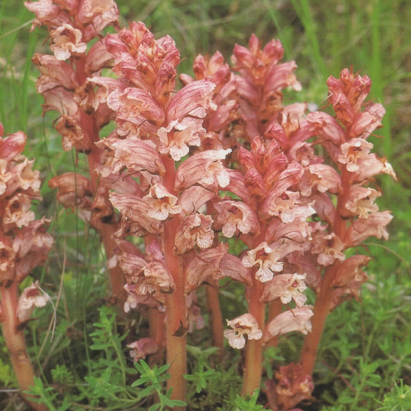
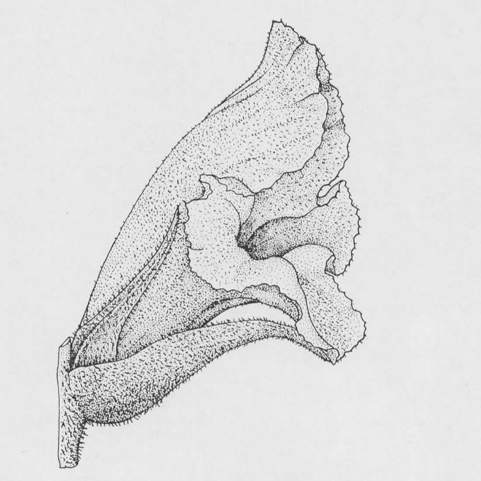

Orobanche alba
- Common name
- Thyme Broomrape
- Family
- Orobanchaceae
- Family common name
- Broomrape family
- Blooms
- April - August
- Habitat and host use
- Orobanche alba is usually found on dry sunny slopes, steppes, subalpine and alpine grasslands, growing in calcareous, alkaline, sandy or loamy soil.
It parasitises plants from the mint family. It is a known parasite of plants from several genera: Thymus and Salvia most commonly, but also Clinopodium, Acinos, Origanum, Satureja, and Stachys.
The parallel violet veins on a lighter background are distinctive.
Range Map